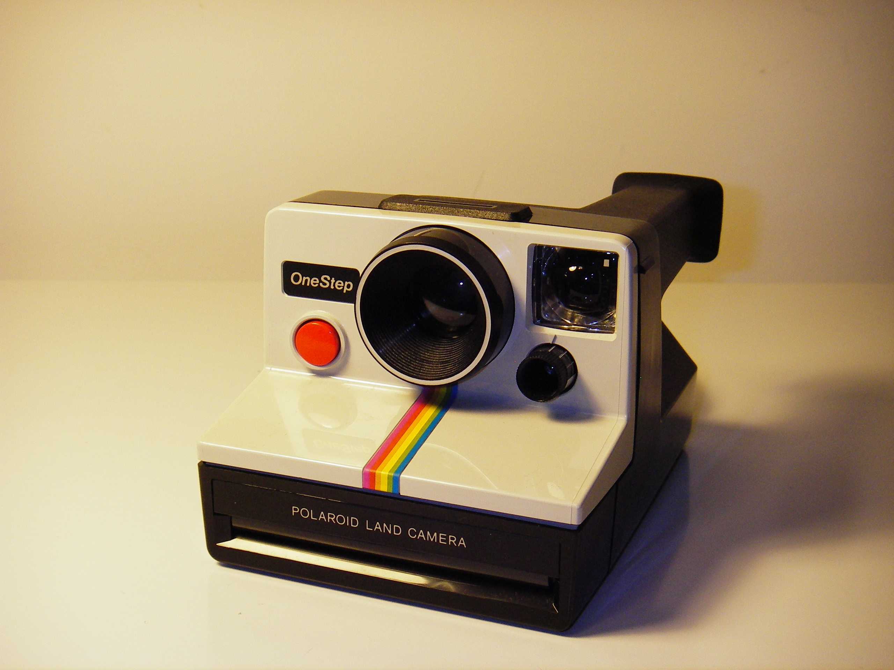

Compare the source photograph with the declarative SDF model and an editable Blender mesh reconstruction. The reference views share a 4:3 frame. Images are displayed in full, with their aspect ratios preserved.

The photograph stays underneath the selected render. Opacity changes only blending; no crop, perspective correction, pixel warping, or automatic alignment is applied.
These views expose geometry that the source photograph cannot fully specify.